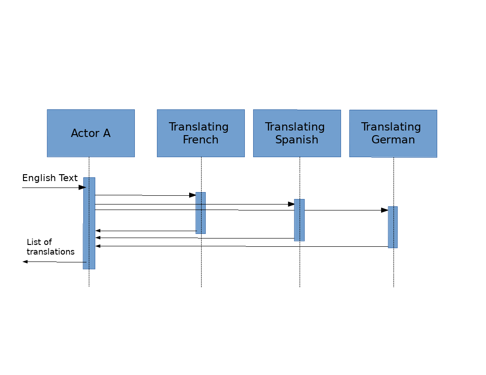
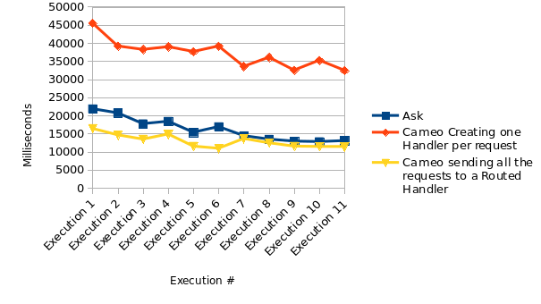

There are times that Akka Actors need to contact some other Actor, get the response and then continue their processing.
It is debatable whether this is a good design or not. However, when designing Akka APIs to be used by different libraries/modules, it is a reality that someone may have to deal with - especially when many different teams collaborate with each other, so you don’t have access to others’ code.
So, how this can be achieved in an efficient way, taking into consideration the inherent asynchronous nature of the Akka Actors?
How someone can implement an Actor A that at some point it needs to contact some Actor B and then use this response to continue its processing?
Possible solutions
The Akka Documentation mentions that Actors can be contacted with three ways: using ask, tell, and forward. Since forward is a kind of tell in a way that both of them are acting like fire and forget, this leaves us only with ask and tell.
Ask
Using ask is generally discouraged.
The main reason is because of performance implications. Each ask operation involves creating an internal Actor that:
- handles the expected response and
- sets/handles possible timeout to make sure that the resources are freed in the case that the awaited response never comes, or comes late
Additionally, there are implementation difficulties that may end-up with closing-over the Actors state etc.
Tell
Using tell seems like the correct way to go, as it doesn’t imply creating additional resources.
…Or does it?
At least for the case that we are talking about, we need to somehow:
- capture the context for each message that we handle
- Contact some other Actor
- Receive response from the other Actor and match it with the initial request (the captured context)
- Continue processing using the captured context
We can achieve all the above using the Cameo Pattern, as described in Jamie Allen’s Effective Akka book, but this involves implementing more code and handle more or less ourselves what ask was handling alone.
Second thoughts
Ronald Kuhn (previous lead of the Akka project), notes that the price to pay when using ask is not zero, but it is very close to it.
This close-to-zero-price can be acceptable per case. However, someone may choose to go by-the-book and choose using tells.
Does just using tell instead of ask worth it? The Cameo Pattern implies the creation of an additional Actor for each and every message processed. Can this lead to worse performance instead of just using ask? And if so, can we do something about it?
Investigating
Use Case
Let’s assume that we have to implement an Actor which:
- Receives text messages written in English
- Sends each message to a bunch of Translating Actors, each one being responsible for translating from English to a specific language (French, Spanish, German)
- Gathers the translations
- Does some post-translation process
- Replies to the initial sender

Implementation
We will implement the above requirements in 3 ways:
- Using
ask. - With the Cameo pattern, creating one Handler per received message.
- With the Cameo pattern, but instead of creating one handler per message, create a routed Handler once and contact this instead.
Testing
Each implementation will be tested by measuring the time needed to handle 1000000 concurrent English translation messages.
The results that we will get should not be treated as absolute numbers, since the absolute timing depends on the machine that the test runs on.
However, by focusing on the differences of the results, we may infer useful findings.
You can find the code here.
Please note that each test case was executed separately. The fact that everything is gathered as one unit-test, is for readability reasons.
Results

The results show that the implementation that performs best is the Cameo using a routed handler (#3).
Next, was the implementation with the ask and the pure Cameo was the worst performer.
Conclusions
askdoes not perform bad.- The creation of Actors is far slower comparing to the creation of
askresources. Even if theaskincludes the creation of an Actor as well, this is a special Actor, rather than a normal one… - Choosing the right size of Routees to act as Cameo handlers seems to be the winner because it does not imply creation of new Actors, rather than reusing the same ones.
So, good analysis and focus on the requirements gives - once again - the best solution
Thanks for reading!